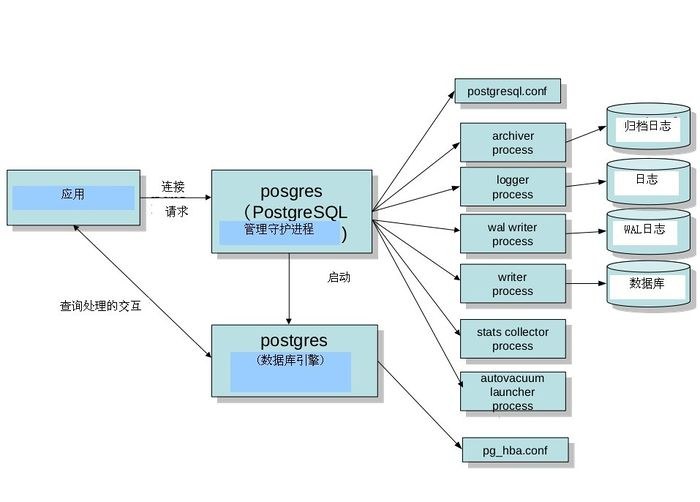

楔子：本文主要介绍PostgreSQL源代码的结构+模式结构+运行结构+源代码结构（好像又回到了学pa的感觉，东拼西凑+自己分析=故本文会很长，主要方便于自己日后查找类似于讲义，如果不是专门来学PostgreSQL的请移步(Orz。
一、PostgreSql体系架构
PostgreSQL采用C/S(客户机/服务器)模式结构。应用层通过INET或者Unix Socket利用既定的协议与数据库服务器进行通信。
PostgreSQL把客户端称为前端(Frontend),把服务器端成为后端(Backend), 后端有复数个进程构成。（很多人如果第一次在linux下安装mysql或者其他数据库不知是否有这个疑问，安装了mysql后还要安装mysql-client。其实和postgre差不多，前端和后端大体的工作模式是：前端向后端发送查询的SQL文，然后后端通过复数个报文把结果返回给前端,另外PostgreSQL本身提供了C语言写的libpq这样一个协议处理库,利用这个库可以比较轻松地和后端进行通信用以处理连接的初始化、错误等各种各样处理，PostgreSQL的协议的处理等复杂问题，PostgreSQL的话除了C以外，还支持Perl和PHP等其他语言，这些语言在内部也调用了libpq.也有不使用libpq而直接与PostgreSQL通信的库。比较具有代表性的是Java, PostgreSQL的JDBC驱动是不依赖于libpq直接与PostgreSQL通信的.
另外后端的话，比较核心的是进行数据库处理的数据库引擎(Database Engine)。数据库引擎可以对用户所编写的函数进行解析和处理，用户如果能够利用好这个功能的话，可以柔软地扩展PostgreSQL的功能。比较经常使用的是存储过程(PostgreSQL中称为用户自定义函数)，PostgreSQL支持的用户定义函数的语言如下：
| 语言 | 对应的自定义函数 |
|---|---|
| C | C函数 |
| SQL | SQL 函数 |
| 类似Oracle的PL SQL的语言 | PL pgSQL |
| Perl | PL Perl |
| Python | PL Python |
二、PostgreSQL的结构-后端主要进程分析

2.1、Postgres(常驻进程)
管理后端的常驻进程，也称为’postmaster’。其默认监听UNIX Domain Socket和TCP/IP（Windows等，一部分的平台只监听tcp/ip）的5432端口，等待来自前端的的连接处理。监听的端口号可以在PostgreSQL的设置文件postgresql.conf里面可以改。
一旦有前端连接过来，postgres会通过fork(2)生成子进程。没有Fork(2)的windows平台的话，则利用createProcess()生成新的进程。这种情形的话，和fork(2)不同的是，父进程的数据不会被继承过来，所以需要利用共享内存把父进程的数据继承过来
2.2、Postgres(子进程)
子进程根据pg_hba.conf定义的安全策略来判断是否允许进行连接，根据策略，会拒绝某些特定的IP及网络，或者也可以只允许某些特定的用户或者对某些数据库进行连接。
Postgres会接受前端过来的查询，然后对数据库进行检索，最好把结果返回，有时也会对数据库进行更新。更新的数据同时还会记录在事务日志里面（PostgreSQL称为WAL日志），这个主要是当停电的时候，服务器当机，重新启动的时候进行恢复处理的时候使用的。另外，把日志归档保存起来，可在需要进行恢复的时候使用。在PostgreSQL 9.0以后，通过把WAL日志传送其他的postgreSQL，可以实时得进行数据库复制，这就是所谓的’数据库复制’功能。
2.3、Writer process
Writer process在适当的时间点把共享内存上的缓存写往磁盘。这个进程的另外一个重要的功能是定期执行检查点(checkpoint)。
2.4、Archive process
Archive process把WAL日志转移到归档日志里。如果保存了基础备份以及归档日志，即使实在磁盘完全损坏的时候，也可以回复数据库到最新的状态。
2.5、stats collector process
统计信息的收集进程。收集好统计表的访问次数，磁盘的访问次数等信息。收集到的信息除了能被autovaccum利用，还可以给其他数据库管理员作为数据库管理的参考信息。
2.6、Logger process
把postgresql的活动状态写到日志信息文件（并非事务日志），在指定的时间间隔里面，对日志文件进行rotate.
2.7、Autovacuum启动进程
autovacuum launcher process是依赖于postmaster间接启动vacuum进程。而其自身是不直接启动自动vacuum进程的。通过这样可以提高系统的可靠性。
三、一条查询语句从前端到后端的心动历程
对应函数路径为/src/backend/目录下的子目录
| 序号 | 历程 | 介绍 | 对应入口函数 |
|---|---|---|---|
| 1 | 接收查询 | 接收前端发送过来的查询(SQL文) | PostgresMain (tcop/postgres.c) |
| 2 | 构文解析 | SQL文是单纯的文字，电脑是认识不了的，所以要转换成比较容易处理的内部形式构文树parser tree,这个处理的称为构文解析。构文解析的模块称为parser.这个阶段只能够使用文字字面上得来的信息，所以只要没语法错误之类的错误，即使是select不存在的表也不会报错。这个阶段的构文树被称为raw parse tree. | raw_parser (parser/parser.c) |
| 3 | 查询树 | 构文树解析完以后，会转换为查询树(Query tree)。这个时候，会访问数据库，检查表是否存在，如果存在的话，则把表名转换为OID。这个处理称为分析处理(Analyze), 进行分析处理的模块是analyzer。另外，PostgreSQL的代码里面提到构文树parser tree的时候，更多的时候是指查询树Query tree。 | parse_analyze (parser/analyze.c) |
| 4 | 生成计划树 | 生成查询树的处理称为’执行计划处理’，最关键是要生成估计能在最短的时间内完成的计划树(plan tree)。这个步骤称为’查询优化’(不叫query optimize, 而是optimize), 而完成这个处理的模块称为查询优化器(不叫query optimizer,而是optimizer, 或者称为planner) | standard_planner (optimizer/plan/planner.c)。 |
| 5 | 执行处理 | 按照执行计划里面的步骤可以完成查询要达到的目的。运行执行计划树里面步骤的处理称为执行处理’execute’, 完成这个处理的模块称为执行器’Executor’ | ExecutorRun (executor/execMain.c) |
四、PostgreSQL的源码
4.1、第一级目录结构
.
├── aclocal.m4 # config 用的文件的一部分
├── config/ # config 用的文件的目录
├── configure # configure 文件
├── configure.in # configure 文件的雏形
├── contrib/ # config 用的文件的目录
├── COPYRIGHT # 版权信息
├── doc/ # 文档目录
├── GNUmakefile.in # Makefile 的雏形
├── HISTORY # 修改历史
├── INSTALL # 安装方法简要说明
├── Makefile # Makefile模版
├── README # 简单说明
└── src # 最重要的源代码目录4.2、第二级目录结构-src
.
├── aclocal.m4
├── config
├── configure
├── configure.in
├── contrib
├── COPYRIGHT
├── doc
├── GNUmakefile.in
├── HISTORY
├── INSTALL
├── Makefile
├── README
└── src
├── backend # 后端的源码目录
├── bin/ # psql 等UNIX命令的代码
├── common/ # 一些公用的函数
├── DEVELOPERS # 面向开发人员的注释
├── fe_utils
├── include/ # 一些公用的头文件
├── interfaces/ # 前端相关的库的代码
├── Makefile # make 的设定值（从configure生成的）
├── Makefile.global.in # Configure使用的Makefile.global的雏形
├── makefiles/ # 平台相关的make 的设置值
├── Makefile.shlib # 共享库用的Makefile
├── nls-global.mk # 信息目录用的Makefile文件的规则
├── pl/ # 存储过程语言的代码
├── port/ # 平台移植相关的代码
├── template/ # 平台相关的设置值
├── test/ # 各种测试脚本
├── timezone/ # 时区相关代码
├── tools/ # 各自开发工具和文档
└── tutorial/ # 教程这里比较核心的是backend,bin,interface这几个目录。Backend是对应于后端，bin和interface对应于前端，bin里面有pgsql,initdb,pg_dump等各种工具的代码。interface里面有PostgreSQL的C语言的库libpq,另外可以在C里嵌入SQL的ECPG命令的相关代码。
4.3、第三级目录结构-backend
.
├── 1.txt
├── aclocal.m4
├── config
├── configure
├── configure.in
├── contrib
├── COPYRIGHT
├── doc
├── GNUmakefile.in
├── HISTORY
├── INSTALL
├── Makefile
├── README
└── src
├── backend
├── access/ # 各种存储访问方法(在各个子目录下) common(共同函数)、gin
├── bootstrap/ # 数据库的初始化处理(initdb的时候)
├── catalog/ # 系统目录
├── commands/ # SELECT/INSERT/UPDATE/DELETE以为的SQL文的处理
├── executor/ # 执行器(访问的执行)
├── foreign/ # FDW(Foreign Data Wrapper)处理
├── jit
├── lib/ # 共同函数
├── libpq/ # 前端/后端通信处理
├── main/ # postgres的主函数
├── Makefile # makefile
├── nodes/ # 构文树节点相关的处理函数
├── optimizer/ # 优化器
├── parser/ # SQL构文解析器
├── partitioning
├── po
├── port/ # 平台相关的代码
├── postmaster/ # postmaster的主函数 (常驻postgres)
├── regex/ # 正则处理
├── replication/ # streaming replication
├── rewrite/ # 规则及视图相关的重写处理
├── snowball/ # 全文检索相关（语干处理）
├── statistics
├── storage/ # 共享内存、磁盘上的存储、缓存等全部一次/二次记录管理(以下的目录)buffer/(缓存管理)、 file/(文件)、
├── tcop/ # postgres (数据库引擎的进程)的主要部分
├── tsearch/ # 全文检索
└── utils/ # 各种模块(以下目录)
五、PostgreSQL的data生成目录结构
4.1、根目录
data
├── base # use to store database file(SELECT oid, datname FROM pg_database;)
├── global # under global, all the filenode is hard-code(select oid,relname,relfilenode from pg_class where relfilenode=0 order by oid;)
├── pg_clog # dir of transaction commit log
│ └── 0000
├── pg_commit_ts
├── pg_dynshmem
├── pg_hba.conf # client authentication config file
├── pg_ident.conf # user ident map file
├── pg_logical
│ ├── mappings
│ └── snapshots
├── pg_multixact
│ ├── members
│ │ └── 0000
│ └── offsets
│ └── 0000
├── pg_notify
│ └── 0000
├── pg_replslot
├── pg_serial
├── pg_snapshots # dir of snapshot file
├── pg_stat
├── pg_stat_tmp # dir of tmp stat file
│ ├── db_0.stat
│ ├── db_12407.stat
│ ├── db_16384.stat
│ └── global.stat
├── pg_subtrans
│ └── 0000
├── pg_tblspc
├── pg_twophase
├── PG_VERSION # version file
├── pg_xlog # dir of xlog file
│ ├── 000000010000000000000001
│ └── archive_status # status info of xlog archive
├── postgresql.auto.conf
├── postgresql.conf # config file of postmaster progress
├── postmaster.opts
└── postmaster.pid # pid file of postmaster progress4.2、global目录介绍
global名如其意，存放的文件用于存储全局的系统表信息和全局控制信息。
global下有四种文件：
pg_control
用于存储全局控制信息pg_filenode.map
用于将当前目录下系统表的OID与具体文件名进行硬编码映射（每个用户创建的数据库目录下也有同名文件）。pg_internal.init
用于缓存系统表，加快系统表读取速度（每个用户创建的数据库目录下也有同名文件）。全局系统表文件
数字命名的文件，用于存储系统表的内容。它们在pg_class里的relfilenode都为0，是靠pg_filenode.map将OID与文件硬编码映射。（注：不是所有的系统表的relfilenode都为0）data ├── global # under global, all the filenode is hard-code(select oid,relname,relfilenode from pg_class where relfilenode=0 order by oid;) │ ├── 1136 # pg_pltemplate │ ├── 1137 # pg_pltemplate_name_index │ ├── 1213 # pg_tablespace │ ├── 1214 # pg_shdepend │ ├── 1232 # pg_shdepend_depender_index │ ├── 1233 # pg_shdepend_reference_index │ ├── 1260 # pg_authid │ ├── 1261 # pg_auth_members │ ├── 1262 # pg_database │ ├── 2396 # pg_shdescription │ ├── 2397 # pg_shdescription_o_c_index │ ├── 2671 # pg_database_datname_index │ ├── 2672 # pg_database_oid_index │ ├── 2676 # pg_authid_rolname_index │ ├── 2677 # pg_authid_oid_index │ ├── 2694 # pg_auth_members_role_member_index │ ├── 2695 # pg_auth_members_member_role_index │ ├── 2697 # pg_tablespace_oid_index │ ├── 2698 # pg_tablespace_spcname_index │ ├── 2846 # pg_toast_2396 │ ├── 2847 # pg_toast_2396_index │ ├── 2964 # pg_db_role_setting │ ├── 2965 # pg_db_role_setting_databaseid_rol_index │ ├── 2966 # pg_toast_2964 │ ├── 2967 # pg_toast_2964_index │ ├── 3592 # pg_shseclabel │ ├── 3593 # pg_shseclabel_object_index │ ├── 4060 # pg_toast_3592x │ ├── 4061 # pg_toast_3592_index │ ├── 6000 # pg_replication_origin │ ├── 6001 # pg_replication_origin_roiident_index │ ├── 6002 # pg_replication_origin_roname_index │ ├── pg_control # global control file, use pgcheck -pc to see it. │ ├── pg_filenode.map # system table (oid -> filenode) mapping file, use pgcheck -pm to see it. │ └── pg_internal.init # system table cache file, use pgcheck -pr to see it.
##### 4.3、base目录介绍
base目录用于存放数据库的所有实体文件。例如，我们创建的第一个库testdb的OID为16384，那么在data/base下就会产生一个名为16384的目录，用于存储testdb的数据文件。
testdb=# select oid,datname from pg_database;
oid | datname
-------+----------- 12407 | postgres
16384 | testdb
1 | template1
12406 | template0
(4 rows)base目录结构
data
├── base # use to store database file(SELECT oid, datname FROM pg_database;)
│ ├── 1 # template database
│ ├── 12406 # template0 database
│ ├── 12407 # postgres database
│ └── 16384 # testdb, first user database
│ │ ├── 3600
│ │ ├── 3600_fsm
│ │ ├── 3600_vm
│ │ ├── 16385
│ │ ├── pg_filenode.map
│ │ ├── pg_internal.init
│ │ └── PG_VERSION
1. pg_filenode.map 是pg_class里relfilenode为0的系统表，OID与文件的硬编码映射。
2. pg_internal.init 是系统表的cache文件，用于加快读取。默认不存在，查询系统表后自动产生。
3. PG_VERSION 是当前数据库数据格式对应的版本号
4. 其它文件是需要到pg_class里根据OID查到对应的relfilenode来与文件名匹配的。
例如：tab1的relfilenode是16385，那么16385这个文件就是tab1的数据文件
testdb=# select oid,relfilenode,relname from pg_class where relname='tab1';
oid | relfilenode | relname
-------+-------------+--------- 16385 | 16385 | tab1
(1 row) 5. 空闲空间映射表
名字以_fsm结尾的文件是数据文件对应的FSM(free space
map)文件，用map方式来标识哪些block是空闲的。用一个Byte而不是bit来标识一个block。对于一个有N个字节的block，它在_fsm文件中第blknum个字节中记录的值是(31+N)/32。通过这种方式标识一个block空闲字节数。FSM中不是简单的数组，而是一个三层的树形结构。FSM文件是在需要用到它时才自动产生的。
6. 可见性映射表文件
名字以_vm结尾的文件是数据文件对应的VM(visibility
map)。PostgreSQL中在做多版本并发控制时是通过在元组头上标识“已无效”来实现删除或更新的，最后通过VACUUM功能来清理无效数据回收空闲空间。在做VACUUM时就使用VM开快速查找包含无效元组的block。VM仅是个简单的bitmap,一个bit对应一个block。
**注：** 系统表分为全局系统表和库级系统表。
全局系统表位于global下，例如：pg_database,pg_tablespace,pg_auth_members这种存储系统级对象的表。
库级系统表位于数据库目录下，例如：pg_type,pg_proc,pg_attribute这种存储库级对象的表。
值得注意的是pg_class位于库级目录的里，但也包含全局系统表信息，因此研发或运维人员在改动全局系统表信息时需要注意。
##### 4.4、表空间目录介绍
testdb=# select oid,* from pg_tablespace;
oid | spcname | spcowner | spcacl | spcoptions
-------+------------+----------+--------+------------ 1663 | pg_default | 10 | |
1664 | pg_global | 10 | |
49162 | dbspace | 10 | |
(3 rows)每一个Oid都在data/pg_tblspc下对应一个名为Oid的软链接文件，指向真正的space目录。
tree ../data/pg_tblspc/
../data/pg_tblspc/
└── 49162 -> /home/postgres/postgresql-9.6.6/postgres/data/dbspace在space目录是如何组织的呢？
testdb=# create table tab3(a int) tablespace dbspace;
CREATE TABLE
testdb=# select oid,relname,relfilenode from pg_class where relname=’tab3’;
oid | relname | relfilenode
——-+———+————- 57351 | tab3 | 57351
(1 row)
tree ../data/pg_tblspc/49162
../data/pg_tblspc/49162
└── PG_9.6_201608131
└── 16384
└── 57351
```